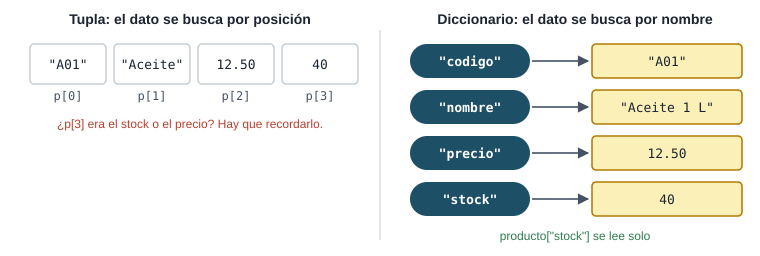
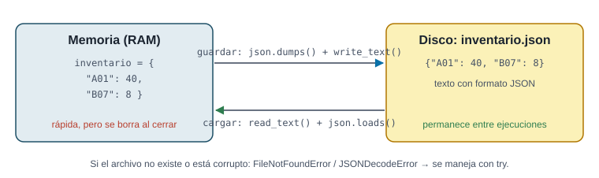
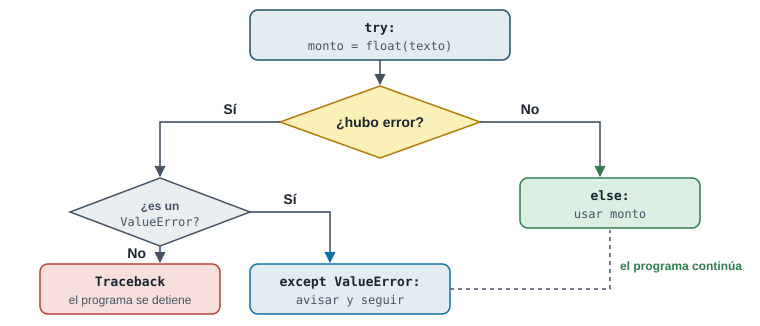

Mapeos avanzados, conjuntos y persistencia de archivos
Hasta ahora todo se perdía al cerrar el programa y los registros eran tuplas que había que leer por posición. Esta semana los datos tienen nombre (diccionarios), se guardan en disco (CSV y JSON) y el programa aprende a fallar sin caerse (excepciones).
Pregunta orientadora¿Cómo organizo registros con nombre, los guardo para la próxima vez y evito que un dato malo tumbe el sistema?
Con precios = {"A01": 12.5, "B07": 4.25}, ¿qué da precios["Z99"]?
Una clave inexistente lanza KeyError. Para un valor por defecto: precios.get("Z99", 0).
¿Qué hace precios["C12"] = 3.90 si "C12" no existe?
Asignar a una clave nueva la crea; a una existente, la reemplaza. Por eso sirve para acumular: totales[v] = totales.get(v, 0) + monto.
¿Qué recorre for codigo, precio in precios.items():?
items() entrega tuplas (clave, valor) que se desempacan en dos variables.
set([3, 1, 3, 2, 1]) produce…
Un conjunto guarda cada elemento una sola vez y sin orden garantizado. Ideal para “¿cuántos clientes distintos?”.
¿Qué bloque se ejecuta si float(texto)no falla?
else corre solo si el try terminó sin error: ahí va el código que usa el valor ya validado.
¿Por qué conviene except ValueError: en vez de except: a secas?
Un except: genérico también esconde errores de programación (un nombre mal escrito) y los vuelve invisibles.
Tu programa hace Path("inventario.json").read_text() y el archivo no existe. ¿Qué excepción aparece?
La primera vez que corre un sistema, el archivo aún no existe: hay que atraparlo y empezar con datos vacíos.
¿Qué hace json.dumps(datos)?
dumps = “dump string”: produce texto. Guardarlo en disco es otro paso: path.write_text(texto). Al revés: read_text + json.loads.
Diccionarios: datos con nombre
En palabras simples
Un diccionario es una agenda: buscas por el nombre (la clave) y encuentras el dato (el valor). Ya no tienes que recordar que el stock estaba “en la posición 3”.

Lo que en la semana 5 era p[3] ahora se escribe producto["stock"].
Caso: la ficha de un producto
Pregunta
¿Cómo guardo los datos de un producto de forma que el código se entienda solo y pueda agregar campos nuevos después?
Exploración
Cada dato tiene un nombre natural (código, nombre, precio, stock). Un diccionario los asocia: {"clave": valor}. Las claves suelen ser texto; los valores, lo que sea.
Implementación
producto = {"codigo": "A01", "nombre": "Aceite 1 L", "precio": 12.50, "stock": 40}
print(producto["nombre"], "cuesta", producto["precio"])
producto["stock"] -= 5 # vendimos 5
producto["proveedor"] = "La Ceiba" # clave nueva
print(producto.get("descuento", 0)) # no existe: valor por defecto
for clave, valor in producto.items():
print(f" {clave:<10} {valor}")
Aceite 1 L cuesta 12.5
0
codigo A01
nombre Aceite 1 L
precio 12.5
stock 35
proveedor La Ceiba
Interpretación
Leer, modificar y agregar usan la misma sintaxis d[clave]. get evita el KeyError cuando un dato es opcional. Recorrer con items() da la clave y el valor a la vez.
Verificación
Stock inicial 40, se vendieron 5 → 35 ✔. Prueba producto["Descuento"] (con mayúscula): las claves distinguen mayúsculas y darás con un KeyError.
El problema de la semana 5, en tres líneas
En la semana 5 sumaste las ventas por vendedor con dos listas paralelas. Con un diccionario:
ventas = [("Ana", 120), ("Luis", 80), ("Ana", 200),
("Eva", 150), ("Luis", 40), ("Ana", 30)]
totales = {}
for vendedor, monto in ventas:
totales[vendedor] = totales.get(vendedor, 0) + monto
print(totales)
mejor = max(totales, key=totales.get)
print(f"Mejor vendedor: {mejor} con ${totales[mejor]}")
{'Ana': 350, 'Luis': 120, 'Eva': 150}
Mejor vendedor: Ana con $350
totales.get(vendedor, 0) devuelve 0 la primera vez que aparece un vendedor. Este patrón (acumular por clave) resuelve “total por categoría”, “ventas por mes”, “stock por bodega”… max(totales, key=totales.get) busca la clave cuyo valor es mayor.
Reordenar: Arroz 5 lb (quedan 8)
Reordenar: Azúcar 5 lb (quedan 0)
Valor del inventario: $534.00
Qué estructura elegir
Lista: una secuencia ordenada (ventas del día).
Tupla: un registro fijo pequeño (coordenada, par base-IVA).
Diccionario: un registro con campos con nombre, o un índice por clave (catálogo por código).
Conjunto: elementos únicos y preguntas de pertenencia.
Conjuntos: únicos y comparaciones
En palabras simples
Un conjunto es una lista de invitados: nadie aparece dos veces y lo importante es si alguien está o no, no el orden.
Caso: ¿qué clientes volvieron a comprar?
Pregunta
El gerente quiere saber cuántos clientes de mayo volvieron en junio (retención), cuántos son nuevos y cuántos se perdieron.
Exploración
Son preguntas de conjuntos: intersección (&), diferencia (-) y unión (|). Con listas harías bucles anidados.
Implementación
clientes_mayo = {"Ana", "Luis", "Eva", "José", "Marta"}
clientes_junio = {"Ana", "Eva", "Carla", "Pedro"}
repiten = clientes_mayo & clientes_junio # en los dos meses
nuevos = clientes_junio - clientes_mayo # solo en junio
perdidos = clientes_mayo - clientes_junio # compraron en mayo y no volvieron
todos = clientes_mayo | clientes_junio
print("Repiten:", sorted(repiten))
print("Nuevos:", sorted(nuevos))
print("Perdidos:", sorted(perdidos))
print(f"Retención: {len(repiten) / len(clientes_mayo):.0%}")
print("Clientes distintos en total:", len(todos))
2 de 5 clientes volvieron: 40 % de retención. Ese indicador dice más del negocio que el total de ventas del mes.
Verificación
Comprueba a mano: repiten + perdidos = clientes de mayo (2 + 3 = 5) ✔; repiten + nuevos = clientes de junio (2 + 2 = 4) ✔.
Archivos: que los datos sobrevivan
En palabras simples
La memoria del programa es una pizarra: al cerrar, se borra. Un archivo es un cuaderno: lo que escribes ahí sigue ahí mañana.

Guardar y cargar son dos pasos cada uno: convertir a texto y escribir; leer y convertir de vuelta.
Caso: reporte de ventas desde un CSV
Pregunta
La caja exporta las ventas en un archivo CSV (valores separados por comas, como una hoja de cálculo). ¿Cuánto se vendió por categoría?
Exploración
csv.DictReader lee cada fila como diccionario usando la primera línea como nombres de columna. Todo llega como texto: el monto hay que convertirlo con float.
Implementación
import csv
from pathlib import Path
ruta = Path("ventas.csv")
ruta.write_text("""fecha,categoria,monto
2026-09-01,abarrotes,120.50
2026-09-01,limpieza,45.00
2026-09-02,abarrotes,80.25
2026-09-02,bebidas,60.00
2026-09-03,limpieza,15.75
""")
por_categoria = {}
with ruta.open() as archivo:
for fila in csv.DictReader(archivo): # cada fila es un diccionario
monto = float(fila["monto"])
por_categoria[fila["categoria"]] = por_categoria.get(fila["categoria"], 0) + monto
for categoria, total in sorted(por_categoria.items()):
print(f"{categoria:<10} ${total:>8.2f}")
with ... as archivo: abre el archivo y lo cierra solo al terminar el bloque. El resultado es el mismo patrón de acumular por clave, ahora alimentado desde un archivo.
Verificación
abarrotes: 120.50 + 80.25 = 200.75 ✔. Prueba agregar una fila con monto vacío: float("") lanza ValueError. Eso lo resuelve la siguiente sección.
JSON: guardar estructuras completas
JSON guarda diccionarios y listas (también anidados) tal cual. Es el formato ideal para el estado del proyecto.
CSV: tablas planas, se abre en Excel, lo producen otros sistemas. JSON: datos anidados (un cliente con su lista de compras), ideal para guardar y volver a cargar el estado de tu programa.
Excepciones: fallar sin caerse
En palabras simples
Una excepción es una alarma. try significa “intenta esto”; except, “si suena esta alarma en particular, haz esto otro en vez de evacuar el edificio”.

Si el error coincide con el except, el programa sigue. Si no hay except para ese error, el programa se detiene.
Caso: validar montos de verdad
Pregunta
En la semana 2 validabas con replace(".", "", 1).isdigit(), que rechazaba negativos y notación como 1e3. ¿Cuál es la forma idiomática?
Exploración
“Es más fácil pedir perdón que permiso”: intenta convertir; si falla, atrapa el ValueError. Después valida la regla de negocio (positivo) en el else.
Implementación
def pedir_monto(texto):
"""Convierte el texto a monto positivo; devuelve None si no es válido."""
try:
monto = float(texto)
except ValueError:
print(f" '{texto}' no es un número.")
return None
else:
if monto <= 0:
print(f" {monto} no es un monto positivo.")
return None
return monto
for entrada in ["150.75", "diez", "", "-5", "1e3"]:
print(repr(entrada), "->", pedir_monto(entrada))
'150.75' -> 150.75
'diez' no es un número.
'diez' -> None
'' no es un número.
'' -> None
-5.0 no es un monto positivo.
'-5' -> None
'1e3' -> 1000.0
Interpretación
"1e3" ahora se acepta (1000.0) y "-5" se rechaza por la regla de negocio, no por el formato. Separar “¿es un número?” de “¿tiene sentido?” da mensajes de error más claros.
Verificación
Cada entrada de prueba recorre un camino distinto: válida, texto, vacía, negativa y notación científica. Esa es tu matriz de casos borde.
Cargar datos sin cerrarse
import json
from pathlib import Path
def cargar_inventario(ruta):
"""Carga el inventario; si no existe o está dañado, empieza vacío sin cerrarse."""
try:
return json.loads(Path(ruta).read_text())
except FileNotFoundError:
print(f"Aviso: {ruta} no existe todavía. Se empieza con un inventario vacío.")
return {}
except json.JSONDecodeError:
print(f"Aviso: {ruta} está dañado. Se empieza vacío (revisa el respaldo).")
return {}
Path("danado.json").write_text('{"A01": 40, ') # archivo cortado a la mitad
print(cargar_inventario("no_existe.json"))
print(cargar_inventario("danado.json"))
Aviso: no_existe.json no existe todavía. Se empieza con un inventario vacío.
{}
Aviso: danado.json está dañado. Se empieza vacío (revisa el respaldo).
{}
Lanzar tus propias excepciones con raise
Cuando una función no puede cumplir su trabajo, en vez de devolver un valor raro (None, -1), puede lanzar una excepción con un mensaje claro. Quien la llama decide qué hacer.
def retirar(saldo, monto):
"""Devuelve el nuevo saldo; lanza ValueError si el retiro no es posible."""
if monto <= 0:
raise ValueError("el monto debe ser positivo")
if monto > saldo:
raise ValueError(f"saldo insuficiente: hay ${saldo}, se pidieron ${monto}")
return saldo - monto
saldo = 100
for monto in [30, 500, -2]:
try:
saldo = retirar(saldo, monto)
print(f"Retiro de ${monto} aprobado. Saldo: ${saldo}")
except ValueError as error:
print(f"Retiro de ${monto} rechazado: {error}")
Retiro de $30 aprobado. Saldo: $70
Retiro de $500 rechazado: saldo insuficiente: hay $70, se pidieron $500
Retiro de $-2 rechazado: el monto debe ser positivo
Tres errores comunes
except: sin tipo: esconde también los errores de programación.
Un try gigante alrededor de todo el programa: no sabes qué línea falló. Envuelve solo la operación riesgosa.
Atrapar y no hacer nada (pass) sin avisar: el usuario cree que todo salió bien.
Al final, total vale 70 (50 + 5 + 15) y hay_D es False.
Traza 2 · ¿Qué bloque se ejecuta?
Para try: n = int(x) / d con except ValueError, except ZeroDivisionError y else. Escribe ValueError, ZeroDivisionError o else.
x
d
Bloque
"10"
2
"diez"
2
"10"
0
"3.5"
1
"-4"
4
¿Por qué int("3.5") da ValueError?
int() con texto exige un entero escrito. Para aceptar decimales: float("3.5").
Ejercicios
E1 · Actualizar una lista de precios
diccionarios · ★
Con precios = {"A01": 12.50, "B07": 4.25, "C12": 3.90, "D03": 6.75}: sube todos los precios 5 %, obtén un diccionario con los productos de más de $5, y encuentra el más barato.
Solución
precios = {"A01": 12.50, "B07": 4.25, "C12": 3.90, "D03": 6.75}
# 1. Subir 5 % todos los precios (redondeados a centavos)
for codigo in precios:
precios[codigo] = round(precios[codigo] * 1.05, 2)
# 2. Productos de más de $5
caros = {c: p for c, p in precios.items() if p > 5}
# 3. Producto más barato
barato = min(precios, key=precios.get)
print(precios)
print(caros)
print(f"Más barato: {barato} (${precios[barato]})")
La línea 7 es una comprensión de diccionario, la misma idea que las comprensiones de lista de la semana 5.
E2 · Ventas por mes y por producto
lista de diccionarios · ★★
Con una lista de ventas (cada una un diccionario con mes, producto y monto), calcula el total por mes, el total por producto y qué porcentaje representa el producto líder.
Pista
Dos diccionarios acumuladores, uno por cada forma de agrupar, llenados en el mismo recorrido.
Por mes: {'ene': 420, 'feb': 650, 'mar': 90}
Por producto: {'Aceite': 750, 'Arroz': 210, 'Café': 200}
Producto líder: Aceite (65% de las ventas)
Verificación: la suma de los totales por mes y la de los totales por producto deben ser iguales (1,160). Si no lo son, se perdió o duplicó alguna venta.
E3 · Bitácora de caja en un archivo de texto
archivos · ★★
Escribe una función registrar(mensaje) que agregue una línea a bitacora.txt sin borrar lo anterior. Registra tres eventos y luego lee el archivo y muéstralo.
Solución
from pathlib import Path
ruta = Path("bitacora.txt")
if ruta.exists():
ruta.unlink() # empezar limpio para el ejemplo
def registrar(mensaje):
"""Agrega una línea al final del archivo sin borrar lo anterior."""
anterior = ruta.read_text() if ruta.exists() else ""
ruta.write_text(anterior + mensaje + "\n")
registrar("09:00 Caja abierta")
registrar("09:15 Venta $25.50")
registrar("18:00 Caja cerrada")
lineas = ruta.read_text().splitlines()
print(f"{len(lineas)} registros")
for linea in lineas:
print(" -", linea)
write_text reemplaza el contenido completo, por eso primero se lee lo anterior. (En Python también existe open(ruta, "a") para agregar directamente.)
E4 · Auditoría: el except que todo lo esconde
auditoría · ★★★
Una IA propuso esta función. “Nunca falla”, pero devuelve 0 cuando el archivo no existe, cuando está dañado, cuando a un producto le falta el precio… y también si escribes mal una variable. ¿Qué problemas tiene y cómo lo rediseñarías?
import json
from pathlib import Path
def cargar(ruta):
try:
datos = json.loads(Path(ruta).read_text())
total = 0
for codigo in datos:
total = total + datos[codigo]["precio"] * datos[codigo]["stock"]
return total
except:
return 0
Solución
except: sin tipo: atrapa todo, incluso errores de programación; nunca sabrás por qué dio 0.
Devolver 0 es ambiguo: ¿el inventario vale 0 o hubo un error?
Hace dos cosas: cargar y calcular. Separarlas permite probar cada una.
import json
from pathlib import Path
def cargar(ruta):
"""Lee el inventario; devuelve {} si no existe (primera ejecución)."""
try:
return json.loads(Path(ruta).read_text())
except FileNotFoundError:
return {}
def valor_inventario(datos):
"""Suma precio x stock; ignora (y reporta) productos incompletos."""
total = 0
for codigo, p in datos.items():
if "precio" not in p or "stock" not in p:
print(f"Aviso: al producto {codigo} le faltan datos.")
continue
total += p["precio"] * p["stock"]
return total
Path("inv.json").write_text('{"A01": {"precio": 12.5, "stock": 4}, "B07": {"precio": 4.25}}')
print(valor_inventario(cargar("inv.json")))
print(valor_inventario(cargar("no_existe.json")))
Aviso: al producto B07 le faltan datos.
50.0
0
Práctica intensiva
Primero ejercicios rápidos que se corrigen solos; luego problemas tipo laboratorio. Pulsa ▶ Ejecutar en las soluciones y modifícalas con Editar.
Ejercicios rápidos · ¿Qué resulta?
Con d = {"a": 1, "b": 2} cuando aparezca. Escribe el resultado; si da error, escribe el nombre del error.
Código
Tu respuesta
d["b"]
d.get("c", 0)
d["c"]
len({"x": 1, "x": 2})
d["a"] = 5
d
"a" in d
len({3, 1, 3, 2})
{1, 2, 3} & {2, 3, 4}
int("12.5")
10 / 0
Problemas tipo examen
P1 · Gestor de transacciones desde CSV
CSV + diccionarios + excepciones · ★★★★
Lee un CSV de transacciones (id, tipo, categoría, monto). Suma los ingresos, agrupa los gastos por categoría con su porcentaje (de mayor a menor) y calcula la utilidad. Las filas con monto inválido o tipo desconocido se rechazan con su motivo, sin detener el programa.
Tu programa debe cumplir estos casos de prueba:
Resultado
Esperado
Ingresos
$2,320.00
Planilla
$900.00 (57 %)
Utilidad
$734.60
Rechazadas
id 4 (monto “abc”) e id 6 (tipo “retiro”)
Pista
Un try pequeño solo alrededor de float(...); el tipo desconocido se detecta con el else final de la cadena if. Ordena con sorted(gastos.items(), key=...).
Solución
import csv
from pathlib import Path
Path("transacciones.csv").write_text("""id,tipo,categoria,monto
1,ingreso,ventas,1500.00
2,gasto,alquiler,600.00
3,gasto,servicios,85.40
4,ingreso,ventas,abc
5,gasto,planilla,900.00
6,retiro,otros,50.00
7,ingreso,ventas,820.00
""")
ingresos = 0
gastos = {}
rechazadas = []
with open("transacciones.csv") as archivo:
for fila in csv.DictReader(archivo):
try:
monto = float(fila["monto"])
except ValueError:
rechazadas.append(f"id {fila['id']}: monto inválido '{fila['monto']}'")
continue
if fila["tipo"] == "ingreso":
ingresos += monto
elif fila["tipo"] == "gasto":
gastos[fila["categoria"]] = gastos.get(fila["categoria"], 0) + monto
else:
rechazadas.append(f"id {fila['id']}: tipo desconocido '{fila['tipo']}'")
total_gastos = sum(gastos.values())
print(f"Ingresos: ${ingresos:,.2f}")
for categoria, monto in sorted(gastos.items(), key=lambda par: par[1], reverse=True):
print(f" {categoria:<10} ${monto:>8,.2f} ({monto / total_gastos:.0%})")
print(f"Utilidad: ${ingresos - total_gastos:,.2f}")
print("Rechazadas:", rechazadas)
Verificación: 1,500 + 820 = 2,320 ✔; gastos 600 + 85.40 + 900 = 1,585.40; utilidad 734.60 ✔. Este es exactamente el laboratorio de la semana.
P2 · Inventario persistente a prueba de fallos
JSON + raise + recuperación · ★★★★
Construye cargar, guardar y mover(stock, codigo, cantidad). El stock se guarda en JSON y se recupera en la siguiente ejecución. Una salida que deje stock negativo lanza ValueError. Si el archivo está dañado, se renombra como respaldo y se empieza vacío.
Tu programa debe cumplir estos casos de prueba:
Situación
Esperado
Primera ejecución (sin archivo)
empieza con {}
A01 +40, B07 +10, A01 −15
A01: 25, B07: 10
B07 −30
rechazado con mensaje
Archivo dañado
{} y se crea stock_danado.json
Pista
Esta es la estructura del persistencia.py de tu proyecto: tres funciones pequeñas, cada una con una sola responsabilidad.
Solución
import json
from pathlib import Path
RUTA = Path("stock.json")
def cargar():
try:
return json.loads(RUTA.read_text())
except FileNotFoundError:
return {}
except json.JSONDecodeError:
RUTA.rename("stock_danado.json") # conservar evidencia
return {}
def guardar(stock):
RUTA.write_text(json.dumps(stock, indent=2))
def mover(stock, codigo, cantidad):
"""Suma (entrada) o resta (salida) stock; lanza ValueError si queda negativo."""
nuevo = stock.get(codigo, 0) + cantidad
if nuevo < 0:
raise ValueError(f"{codigo}: no hay suficiente stock ({stock.get(codigo, 0)})")
stock[codigo] = nuevo
# Primera ejecución: no hay archivo
if RUTA.exists():
RUTA.unlink()
stock = cargar()
for codigo, cantidad in [("A01", 40), ("B07", 10), ("A01", -15), ("B07", -30)]:
try:
mover(stock, codigo, cantidad)
except ValueError as error:
print("Rechazado:", error)
guardar(stock)
# "Segunda ejecución": el estado se recupera desde el disco
print("Recuperado:", cargar())
# Archivo dañado: el programa no se cae
RUTA.write_text("{ esto no es JSON")
print("Tras daño:", cargar(), "| respaldo existe:", Path("stock_danado.json").exists())
Rechazado: B07: no hay suficiente stock (10)
Recuperado: {'A01': 25, 'B07': 10}
Tras daño: {} | respaldo existe: True
P3 · Análisis de canasta con conjuntos
diccionario de conjuntos · ★★★
Con una lista de compras (cliente, producto), arma un diccionario cliente → conjunto de productos. Luego: ¿qué producto recomendarías a Eva según lo que compra Ana? ¿Qué clientes compraron el combo A01 + B07?
Tu programa debe cumplir estos casos de prueba:
Pregunta
Esperado
Productos de Ana
['A01', 'C12'] (sin repetir A01)
Recomendar a Eva
['C12']
Compraron el combo
['Eva', 'Luis']
Pista
d.setdefault(clave, set()) devuelve el conjunto de esa clave, creándolo vacío si no existía. a <= b pregunta si a es subconjunto de b.
Solución
compras = [("Ana", "A01"), ("Luis", "B07"), ("Ana", "C12"), ("Eva", "A01"),
("Luis", "A01"), ("Ana", "A01"), ("Marta", "D03"), ("Eva", "B07")]
productos_por_cliente = {}
for cliente, producto in compras:
productos_por_cliente.setdefault(cliente, set()).add(producto)
for cliente, productos in sorted(productos_por_cliente.items()):
print(f"{cliente:<6} {sorted(productos)}")
# ¿Qué productos compró Ana que Eva no? (recomendación para Eva)
recomendar = productos_por_cliente["Ana"] - productos_por_cliente["Eva"]
print("Recomendar a Eva:", sorted(recomendar))
# Clientes que compraron A01 y B07 (combo)
combo = [c for c, ps in productos_por_cliente.items() if {"A01", "B07"} <= ps]
print("Compraron el combo A01 + B07:", sorted(combo))
Ana ['A01', 'C12']
Eva ['A01', 'B07']
Luis ['A01', 'B07']
Marta ['D03']
Recomendar a Eva: ['C12']
Compraron el combo A01 + B07: ['Eva', 'Luis']
Interpretación: así funcionan, en versión mínima, los “clientes que compraron esto también compraron…” de las tiendas en línea.
Proyecto integrador · Fase 4
Semana 7 · Persistencia en disco y manejo de errores.
Entregables de esta fase
Preguntas de defensa
¿Qué pasa si borran el archivo de datos antes de ejecutar?
El sistema atrapa FileNotFoundError, empieza con datos vacíos (o de ejemplo) y lo informa. Muestra el try exacto.
¿Por qué eligieron JSON (o CSV)?
JSON guarda estructuras anidadas y se recupera tal cual; CSV sirve para tablas planas que otros abren en Excel. Justifica según la forma de tus datos.
¿Por qué no usan un except: general?
Porque escondería errores de programación. Atrapamos solo los errores esperados y dejamos que los inesperados se vean para corregirlos.
¿Cómo validan que un monto sea correcto?
Primero el formato (try: float(...)), luego la regla de negocio (positivo, dentro de rango) con un mensaje distinto para cada caso.
Muéstrennos el archivo de datos y expliquen su estructura.
Abre el JSON, señala claves y valores, y relaciona cada campo con el código que lo lee.
Rumbo al Control 3
El Control 3 es en la semana 8 (confirma el temario en Moodle). De esta semana, asegúrate de poder:
Fuentes
[PCC] Matthes, E. (2023). Python Crash Course, 3.ª ed. Caps. 6 y 10.